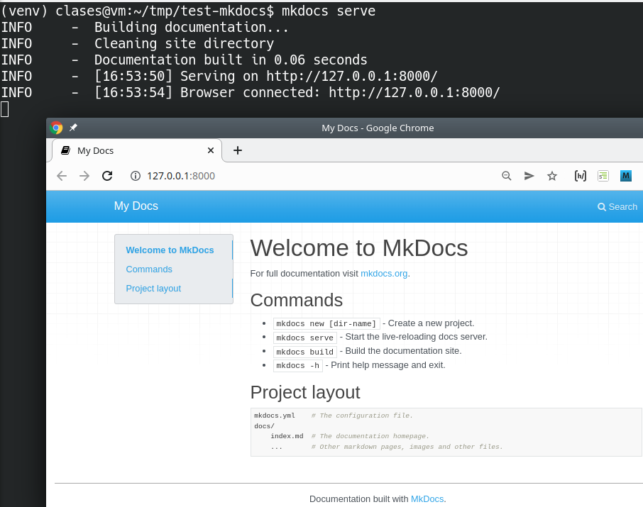
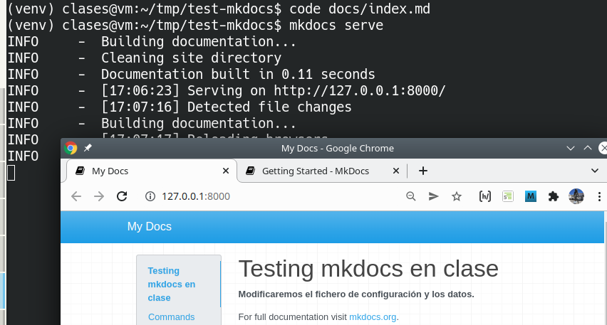
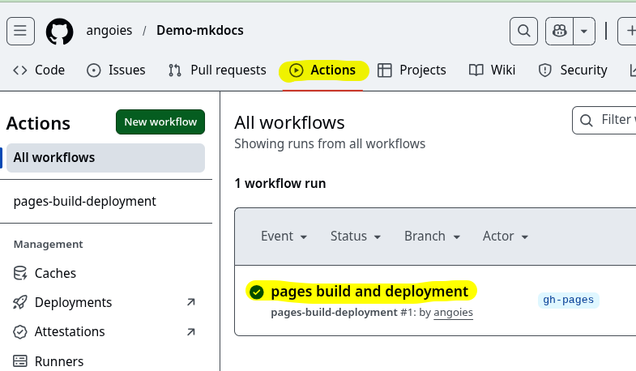
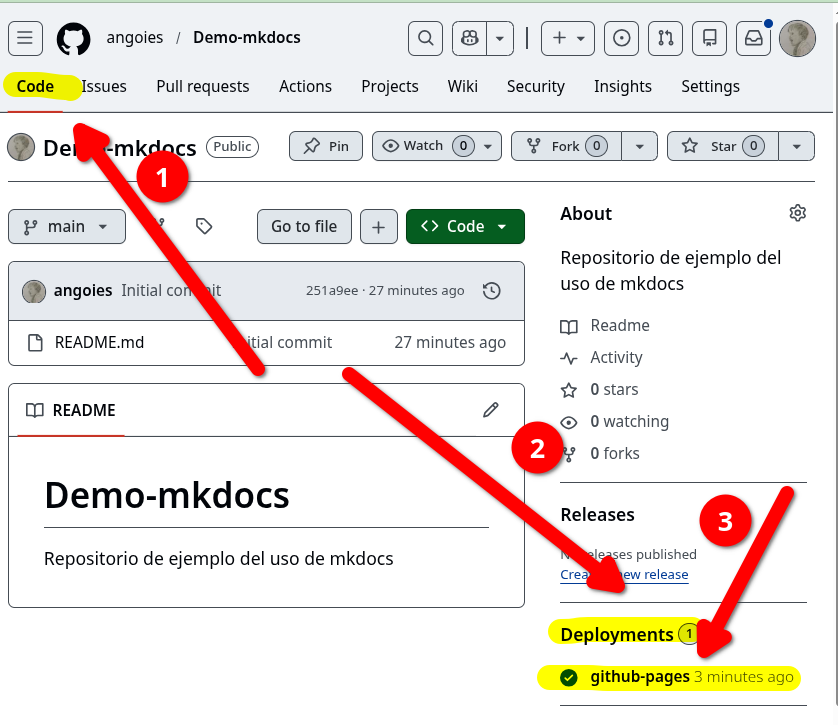
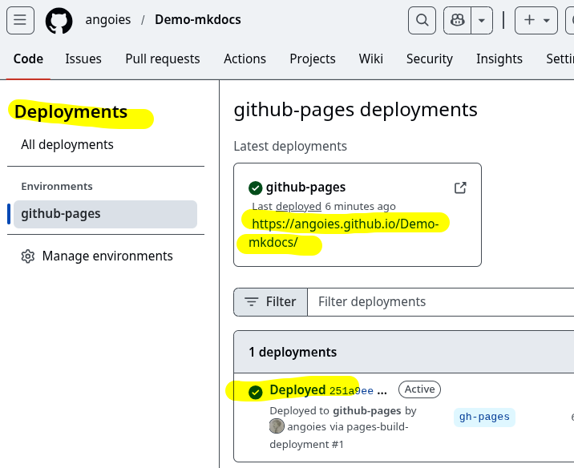

mkdocs¶
MkDocs: Project documentation with Markdown.
MkDocs is a fast, simple and downright gorgeous static site generator that's geared towards building project documentation. Documentation source files are written in Markdown, and configured with a single YAML configuration file. https://www.mkdocs.org.
La idea es:
- simplificar el trabajo de documentar,
- poder hacerlo en Markdown.
- añadir de forma simple estilos, diseño adaptativo, barra de búsquedas, índices automáticos, etc.
- desplegar en Github
Pasos a dar:
- Crear un repositoprio en GitHub y clonarlo en local.
- Instalar
mkdocs(se usa un entorno virtual Python). -
Usando como guía Getting Started with MkDocs
- Crear proyecto dentro de directorio clonado
- Lanzar mkdocs en local para ver cambios en vivo antes de subirlos a GitHub.
- Añadir ficheros en formato Markdown
- Modificar el fichero de configuración para que indexe los ficheros añadidos.
- Modificar el tema por defecto
-
Una vez terminado desplegar en GitHub y ver el resultado: se activa Pages y crea una rama de nombre
gh-pagesdonde sube el sitio web generado.
1. Crear repositorio y clonar¶
- Acceda a GitHub y cree un repositorio público con Fichero
README.md. - Clone el repositorio en local
- Acceda al directorio creado con el comando
cd
Aviso: a lo largo de estos ejemplos se ha usado el acceso HTTPS a Github mediante el uso de token.
La ejecución de esos tres pasos será similar a esta:
alu@xd13:~/varios$ git clone https://github.com/angoies/Demo-mkdocs.git
Clonando en 'Demo-mkdocs'...
remote: Enumerating objects: 3, done.
remote: Counting objects: 100% (3/3), done.
remote: Compressing objects: 100% (2/2), done.
remote: Total 3 (delta 0), reused 0 (delta 0), pack-reused 0 (from 0)
Recibiendo objetos: 100% (3/3), listo.
alu@xd13:~/varios$ cd Demo-mkdocs/
alu@xd13:~/varios/Demo-mkdocs$
2. Instalar mkdocs¶
Se utiliza un entorno virtual Python:
alu@xd13:~/varios/Demo-mkdocs$ python3 -m venv venv
alu@xd13:~/varios/Demo-mkdocs$ source venv/bin/activate
(venv) alu@xd13:~/varios/Demo-mkdocs$
sobre el que se instala mkdocs:
(venv) alu@xd13:~/varios/Demo-mkdocs$ pip install mkdocs
Collecting mkdocs
Downloading mkdocs-1.6.1-py3-none-any.whl.metadata (6.0 kB)
...
(venv) alu@xd13:~/varios/Demo-mkdocs$
Aviso: ver anexo si no está instalado
venvo Python
3. Crear el proyecto¶
Para crear un proyecto de documentación usamos el comando mkdocs new <dir>, que crea un directorio para ese proyecto y dentro un fichero de configuración mkdocs.yml, un directorio docs y dentro de este un fichero index.md inicial. En docs es donde crearemos y editaremos nuestros ficheros en Markdown.
En este caso, al estar ya creado el directorio del proyecto, se usa el directorio actual como destino mkdocs new . :
(venv) alu@xd13:~/varios/Demo-mkdocs$ mkdocs new .
INFO - Writing config file: ./mkdocs.yml
INFO - Writing initial docs: ./docs/index.md
(venv) alu@xd13:~/varios/Demo-mkdocs$ ls -al
total 28
drwxrwxr-x 5 alu alu 4096 mar 26 11:30 .
drwxrwxr-x 6 alu alu 4096 mar 26 11:21 ..
drwxrwxr-x 2 alu alu 4096 mar 26 11:30 docs
drwxrwxr-x 8 alu alu 4096 mar 26 11:21 .git
-rw-rw-r-- 1 alu alu 19 mar 26 11:30 mkdocs.yml
-rw-rw-r-- 1 alu alu 55 mar 26 11:21 README.md
drwxrwxr-x 5 alu alu 4096 mar 26 11:23 venv
(venv) alu@xd13:~/varios/Demo-mkdocs$
4. Modo desarrollo¶
Con el comando mkdocs serve se inicia un servidor web de desarrollo (en la URL http://127.0.0.1:8000/) que muestra el resultado de mkdocs en formato web:

El servidor soporta auto-reload, y reconstruye la documentación si hay cambios en el fichero de configuración o en el directorio de documentación.
Por ejemplo, si edita index.md y cambia el título de dicha página mkdocs serve lo detecta (INFO - [17:07:16] Detected file changes) y reconstruye la documentación (INFO - Building documentation...) :

Ahora el proceso quedaría:
- Preparar la documentación en ficheros Markdown, figuras, enlaces, etc.
- Subirla a un hosting, en esta práctica GitHub.
5. Crear la documentación¶
mkdocs convertirá sus ficheros markdown en ficheros HTML y les añadirá estilos CSS y comportamiento dinámico con javascriopt. Crea índices con las cabeceras de nivel que encuentra en los ficheros fuente. Y genera una barra de navegación que permite navegar secuencialmente. Por si fuera poco incorpora un buscador y un comportamiento adaptativo.
Si tiene varios ficheros que desea referenciar en la barra de navegación hay que hacerlo en el fichero mkdocs.yml, apartado nav:
site_name: Ejemplo uso mkdocs
site_url: http://local.com
nav:
- Home: index.md
- Ejercicios:
- E01: ejercicio_01.md
- E02: ejercicio_02.md
- Sobre nosotros: about.md
theme: readthedocs
5.1. Temas¶
Si quiere modificar el tema (por defecto utiliza uno llamado mkdocs) debe usar el fichero de configuración e indicar otro tema. En este caso se usa el tema readthedocs ya incluido en mkdocs.
Hay temas adicionales disponibles en este enlace
5.2. Build¶
Una vez haya terminado de trabajar con su documentación podría hacer un build de la misma. Esto genera un directorio site con todo el HTML, estilos, javascript, imágenes, fuentes, etc:
(venv) alu@xd13:~/varios/Demo-mkdocs$ mkdocs build
INFO - Cleaning site directory
INFO - Building documentation to directory: /home/alu/varios/Demo-mkdocs/site
INFO - Documentation built in 0.04 seconds
(venv) alu@xd13:~/varios/Demo-mkdocs$
(venv) alu@xd13:~/varios/Demo-mkdocs$ ls -l site/
total 44
-rw-rw-r-- 1 alu alu 5305 mar 26 11:36 404.html
drwxrwxr-x 2 alu alu 4096 mar 26 11:36 css
drwxrwxr-x 2 alu alu 4096 mar 26 11:36 img
-rw-rw-r-- 1 alu alu 7058 mar 26 11:36 index.html
drwxrwxr-x 2 alu alu 4096 mar 26 11:36 js
drwxrwxr-x 2 alu alu 4096 mar 26 11:36 search
-rw-rw-r-- 1 alu alu 109 mar 26 11:36 sitemap.xml
-rw-rw-r-- 1 alu alu 127 mar 26 11:36 sitemap.xml.gz
drwxrwxr-x 2 alu alu 4096 mar 26 11:36 webfonts
(venv) alu@xd13:~/varios/Demo-mkdocs$
6. Despliegue¶
Si quisiera desplegarlo en un hosting sólo tendría que subir el directorio site. Pero nuestro objetivo es desplegarlo sobre GitHub Pages, y eso lo hace de una forma muy sencilla mkdocs. Y es lo que se presenta en este apartado.
Antes de continuar y para evitar por error que el entorno virtual (el directorio venv) sea parte del repositorio se recomienda crear el fichero .gitignore. Este contendra las lista de los ficheros y directorios que no queremos que formen parte del repositorio.
(venv) alu@xd13:~/varios/Demo-mkdocs$ nano .gitignore
(venv) alu@xd13:~/varios/Demo-mkdocs$ cat .gitignore
venv/
(venv) alu@xd13:~/varios/Demo-mkdocs$
Ahora puede hacer el deploy de la documentación con el comando mkdocs gh-deploy. Este comando hace el build de la documentación, la mueve a una ramagh-pages y hace un push al remoto:
(venv) alu@xd13:~/varios/Demo-mkdocs$ mkdocs gh-deploy
INFO - Cleaning site directory
INFO - Building documentation to directory: /home/alu/varios/Demo-mkdocs/site
INFO - Documentation built in 0.05 seconds
WARNING - Version check skipped: No version specified in previous deployment.
INFO - Copying '/home/alu/varios/Demo-mkdocs/site' to 'gh-pages' branch and pushing to GitHub.
Enumerando objetos: 37, listo.
Contando objetos: 100% (37/37), listo.
Compresión delta usando hasta 4 hilos
Comprimiendo objetos: 100% (36/36), listo.
Escribiendo objetos: 100% (37/37), 827.52 KiB | 11.33 MiB/s, listo.
Total 37 (delta 1), reused 0 (delta 0), pack-reused 0 (from 0)
remote: Resolving deltas: 100% (1/1), done.
remote:
remote: Create a pull request for 'gh-pages' on GitHub by visiting:
remote: https://github.com/angoies/Demo-mkdocs/pull/new/gh-pages
remote:
To https://github.com/angoies/Demo-mkdocs.git
* [new branch] gh-pages -> gh-pages
INFO - Your documentation should shortly be available at: https://angoies.github.io/Demo-mkdocs/
(venv) alu@xd13:~/varios/Demo-mkdocs$
Además nos informa que en breve (shortly) la documentación estará disponible en la URL https://angoies.github.io/Demo-mkdocs/
Nuevamente el proceso se realiza con Actions, puede comprobarlo en la pestaña Actions del repositorio:

O en la de código:

Y ver la URL

7. Anexos¶
7.1. Enlaces¶
- Mkdocs: https://www.mkdocs.org/
7.2. Instalación mkdocs¶
Debe tener instalado previamente:
python3python-venv
Si no los tiene instalados:
# apt install python3
# apt install python3-venv
Luego cree un entorno virtual en el repositorio:
$ python3 -m venv mivenv
Ese comando crea un directorio de nombre mivenv. Añadir el entorno virtual al fichero .gitignore:
$ echo "mivenv" >> .gitignore
$ echo ".gitignore" >> .gitignore
Activar el entorno virtual creado en mienv:
$ source mivenv/bin/activate
(mivenv) $
Observe como ahora el prompt muestra entre paréntesis el nombre del entorno virtual.
Ahora instale el modulo mkdocs con la utilidad pip en el entorno virtual:
(mivenv) $ pip install mkdocs
...
(mivenv) $
Y ya puede usar mkdocs:
(mivenv) $ mkdocs
Al terminar de trabajar con el entorno:
(mivenv) $ deactivate
$
Una vez fuera del entorno virtual no es posible acceder a mkdocs
$ mkdocs
bash: mkdocs: orden no encontrada
$
Si desea eliminar el entorno virtual basta con borrar el directorio mienv
$ rm -rf mienv
$
7.3. Instalación mkdocs Windows¶
Pasos a dar:
-
Instalar python (y quizás haga falta pip, opcional venv)
-
Descargar https://www.python.org/
- Instalar seleccionando en primera pantalla "Add Python.exe to PATH"
-
Probar instalación:
User@WinDev2004Eval MINGW64 ~ $ python --version Python 3.12.2 User@WinDev2004Eval MINGW64 ~ $ pip --version pip 24.0 from C:\Users\User\AppData\Local\Programs\Python\Python312\Lib\site-packages\pip (python 3.12) User@WinDev2004Eval MINGW64 ~ $ -
Instalar
mkdocs:User@WinDev2004Eval MINGW64 ~ $ pip install mkdocs Collecting mkdocs Downloading mkdocs-1.5.3-py3-none-any.whl.metadata (6.2 kB) ... Installing collected packages: ... Successfully installed .... User@WinDev2004Eval MINGW64 ~ $Y probar la instalación
User@WinDev2004Eval MINGW64 ~ $ mkdocs.exe --version mkdocs, version 1.5.3 from C:\Users\User\AppData\Local\Programs\Python\Python312\Lib\site-packages\mkdocs (Python 3.12) User@WinDev2004Eval MINGW64 ~ $